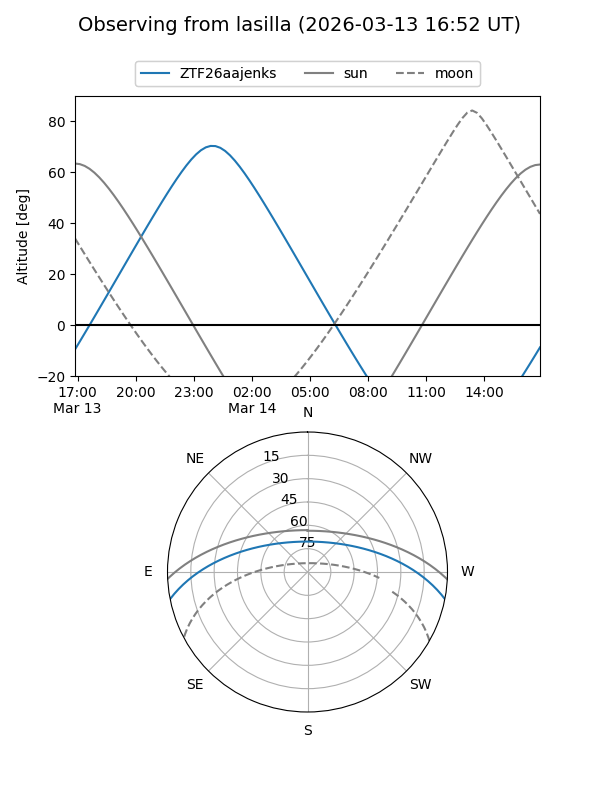
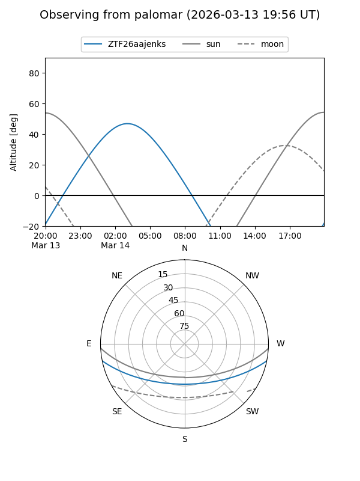

ZTF26aajenks
Target ZTF26aajenks at 2026-03-14 04:20
Aliases and brokers:
FINK: link
Lasair: link
ALeRCE: link
alt names
ZTF26aajenks (ztf,fink_ztf)
Coordinates:
equatorial (ra, dec) = 100.1343,-9.66552
equatorial (HMS+DMS) = 06:40:32.22,-09:39:55.87
galactic (l, b) = (220.3413,-6.79243)
Flags:
Photometry:
last ztfg=18.84
1 ztfg detections
Lightcurve
Visibility


Additional plots